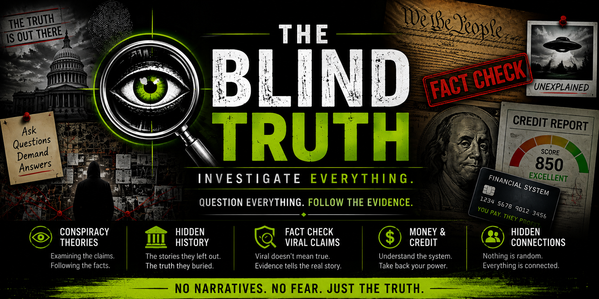
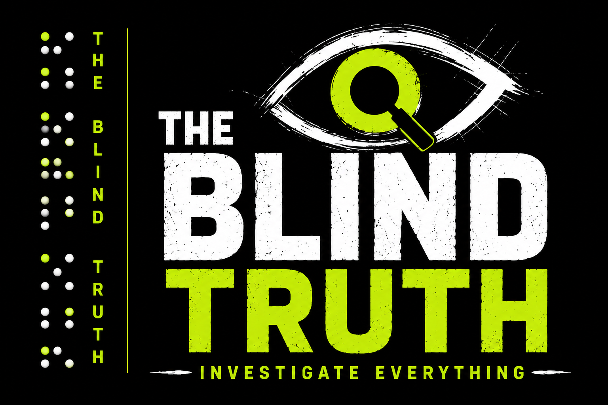

Why Conspiracy Theories Survive
Explore the psychological, social, historical and technological forces that allow controversial beliefs to spread, adapt and survive over time.
Read Investigation 001
The Blind Truth investigates controversial claims, conspiracy theories, hidden history, mysteries, government records, technology, money and popular beliefs by separating documented evidence from speculation.
The first Blind Truth case file examines why controversial theories can survive even when strong evidence challenges them.
Explore the psychological, social, historical and technological forces that allow controversial beliefs to spread, adapt and survive over time.
Read Investigation 001The Blind Truth follows evidence across different subjects rather than limiting investigations to one type of claim.
Claims, theories and disputed explanations examined against available evidence.
Overlooked events, forgotten records and historical claims worth another look.
Public records, government claims, policies and historical controversies.
Scientific claims examined through published research and available evidence.
Business practices, financial claims, corporate influence and economic controversies.
AI, surveillance, emerging technology and the claims surrounding them.
Cases and questions where important pieces of the story remain unknown.
Viral stories and popular claims tested against documented evidence.
Not every investigation ends with a simple true or false answer. Our verdict scale reflects the strength and quality of the evidence.

The Blind Truth was created around one principle: important claims deserve investigation, not automatic belief and not automatic dismissal. Follow the records, question the assumptions and examine what the evidence actually shows.
Get new investigations and Blind Truth updates delivered directly to your inbox. Our independent newsletter system is being built now.
The Blind Truth exists to examine claims instead of blindly accepting or dismissing them. We look at primary sources, official records, research, conflicting claims and available evidence before drawing conclusions. The objective is not to tell readers what to believe. It is to give them enough information to examine the evidence themselves.